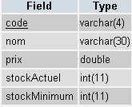
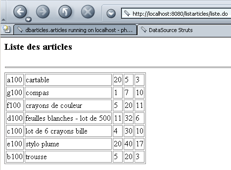

9. Trabalhar com uma fonte de dados
Aqui, pretendemos estabelecer as bases para trabalhar com bases de dados numa aplicação Struts.
9.1. A aplicação Struts /listarticles
Queremos apresentar o conteúdo de uma tabela que armazena as características dos artigos vendidos por uma loja.
 |
|
A tabela contém o seguinte:

A aplicação listarticles apresentará as mesmas informações (embora de forma menos elegante) numa página web:

9.2. Configuração da aplicação Struts /listarticles
O ficheiro web.xml da aplicação é padrão:
web.xml
<?xml version="1.0" encoding="ISO-8859-1"?>
<!DOCTYPE web-app
PUBLIC "-//Sun Microsystems, Inc.//DTD Web Application 2.3//EN"
"http://java.sun.com/dtd/web-app_2_3.dtd">
<web-app>
<servlet>
<servlet-name>action</servlet-name>
<servlet-class>org.apache.struts.action.ActionServlet</servlet-class>
<init-param>
<param-name>config</param-name>
<param-value>/WEB-INF/struts-config.xml</param-value>
</init-param>
<load-on-startup>1</load-on-startup>
</servlet>
<servlet-mapping>
<servlet-name>action</servlet-name>
<url-pattern>*.do</url-pattern>
</servlet-mapping>
<taglib>
<taglib-uri>/WEB-INF/struts-bean.tld</taglib-uri>
<taglib-location>/WEB-INF/struts-bean.tld</taglib-location>
</taglib>
<taglib>
<taglib-uri>/WEB-INF/struts-logic.tld</taglib-uri>
<taglib-location>/WEB-INF/struts-logic.tld</taglib-location>
</taglib>
</web-app>
O ficheiro struts-config.xml introduz uma nova secção <data-sources> que permite declarar e configurar fontes de dados:
struts-config.xml
<?xml version="1.0" encoding="ISO-8859-1" ?>
<!DOCTYPE struts-config PUBLIC
"-//Apache Software Foundation//DTD Struts Configuration 1.1//EN"
"http://jakarta.apache.org/struts/dtds/struts-config_1_1.dtd">
<struts-config>
<data-sources>
<data-source key="dbarticles">
<set-property property="driverClass" value="com.mysql.jdbc.Driver"></set-property>
<set-property property="url" value="jdbc:mysql://localhost/dbarticles"></set-property>
<set-property property="user" value="admarticles"></set-property>
<set-property property="password" value="mdparticles"></set-property>
<set-property property="minCount" value="2"></set-property>
<set-property property="maxCount" value="5"></set-property>
</data-source>
</data-sources>
<action-mappings>
<action path="/liste" type="istia.st.struts.articles.ListeArticlesAction">
<forward name="afficherListeArticles" path="/vues/listarticles.jsp"/>
<forward name="afficherErreurs" path="/vues/erreurs.jsp"/>
</action>
</action-mappings>
<message-resources parameter="istia.st.struts.articles.ApplicationResources"
null="false" />
</struts-config>
9.2.1. Fontes de dados
A secção <data-sources> é utilizada para declarar todas as fontes de dados da aplicação, cada uma das quais é descrita por uma secção <data-source>. Esta tag suporta vários atributos:
identifica a fonte de dados quando existem várias fontes. | |
o nome da classe a ser instanciada para aceder à base de dados. Esta classe encontra-se normalmente numa biblioteca de classes (.jar) fornecida pelo fornecedor do SGBD. Esta biblioteca contém o controlador JDBC para acesso à base de dados. A propriedade driverClass especifica este controlador. O ficheiro .jar que contém as classes de acesso ao SGBD será colocado na pasta WEB-INF/lib da aplicação. | |
Cadeia de ligação a uma base de dados específica. O controlador JDBC permite o acesso a todas as bases de dados geridas pelo SGBD. A propriedade url permite-nos especificar qual delas iremos utilizar. | |
O acesso à base de dados é protegido. O SGBD gere utilizadores identificados por um nome de utilizador e uma palavra-passe. Estes são especificados nos atributos user e password da tag. | |
O Struts gere um conjunto de ligações ao SGBD. Abrir uma ligação a um SGBD é uma operação que consome muitos recursos em termos de tempo e memória. Em vez de abrir e fechar uma ligação ao SGBD para cada pedido feito à aplicação, a aplicação gere um conjunto de n ligações, em que n está no intervalo [minCount, maxCount]. Se, durante um pedido, a aplicação precisar de uma ligação: - tentará obter uma do conjunto de conexões. Se encontrar uma livre, utiliza-a. - se não houver ligações livres no conjunto e houver menos de maxCount ligações no conjunto, é aberta uma nova ligação e adicionada ao conjunto. A consulta atual pode utilizá-la. - Se não houver ligações livres e não for possível criar uma nova, a solicitação é colocada em espera. Quando a solicitação atual encerra a conexão, ela não é realmente encerrada, mas devolvida ao pool. |
Aqui, temos as seguintes propriedades:
dbarticles - este é o nome pelo qual a fonte de dados será identificada no contexto da aplicação | |
com.mysql.jdbc.Driver. Estamos a utilizar uma base de dados MySQL. | |
jdbc:mysql://localhost/dbarticles. A base de dados chama-se dbarticles e está localizada na máquina local. | |
admarticles, mdparticles. A este utilizador foram concedidos privilégios totais na base de dados dbarticles. | |
2, 5. Mínimo de 2 ligações no conjunto, máximo de 5. |
9.2.2. Ações
As ações declaradas no ficheiro de configuração do Struts são as seguintes:
<action-mappings>
<action path="/liste" type="istia.st.struts.articles.ListeArticlesAction">
<forward name="afficherListeArticles" path="/vues/listarticles.jsp"/>
<forward name="afficherErreurs" path="/vues/erreurs.jsp"/>
</action>
</action-mappings>
A única ação chama-se /list e está associada à classe istia.st.struts.articles.ListeArticlesAction. Esta ação termina com a exibição:
- a página de artigos (/vues/listarticles.jsp)
- a página de erro (/views/errors.jsp)
9.2.3. O ficheiro de mensagens
O ficheiro de mensagens ApplicationResources.properties será colocado na pasta WEB-INF/classes/istia/st/struts/articles. O seu conteúdo será o seguinte:
# erreurs
errors.header=<ul>
errors.footer=</ul>
erreur.dbarticles=<li>Erreur d'accès à la base des articles ({0})</li>
Apenas um erro pode ocorrer: um erro de acesso à base de dados. Na verdade, existem vários tipos possíveis de erros, todos agrupados sob a mesma mensagem de erro. A causa exata do erro será, no entanto, especificada no parâmetro {0}.
9.3. Visualizações
9.3.1. A vista errors.jsp
Esta vista deve apresentar uma lista de erros. Já a encontrámos várias vezes.
<%@ taglib uri="/WEB-INF/struts-html.tld" prefix="html" %>
<html>
<head>
<title>Liste d'articles - erreurs</title>
</head>
<body>
<h2>Les erreurs suivantes se sont produites</h2>
<html:errors/>
</body>
</html>
Esta vista apresenta simplesmente a lista de erros utilizando a tag <html:errors/>.
9.3.2. A vista listarticles.jsp
Esta vista deve apresentar o conteúdo da tabela ARTICLES na base de dados. O seu código é o seguinte:
<%@ taglib uri="/WEB-INF/struts-bean.tld" prefix="bean" %>
<%@ taglib uri="/WEB-INF/struts-logic.tld" prefix="logic" %>
<%
// listarticles : ArrayList dans la requête
// listArticles(i) : tableau (String[5]) de 5 éléments
%>
<html>
<head>
<title>DataSource Struts</title>
</head>
<body>
<h3>Liste des articles</h3>
<hr>
<table border="1">
<logic:iterate id="ligne" name="listArticles">
<tr>
<logic:iterate id="colonne" name="ligne">
<td><bean:write name="colonne"/></td>
</logic:iterate>
</tr>
</logic:iterate>
</table>
</body>
</html>
A ação /list irá colocar o conteúdo da tabela ARTICLES num objeto ArrayList denominado listArticles na solicitação. Cada elemento do objeto listArticles é uma matriz de 5 strings que representam as 5 informações (código, nome, preço, stock atual, stock mínimo) associadas a um item na tabela. A vista deve apresentar o conteúdo do objeto listArticles numa tabela HTML. Para tal, utiliza a tag <logic:iterate>:
<logic:iterate id="ligne" name="listArticles">
<tr>
<logic:iterate id="colonne" name="ligne">
<td><bean:write name="colonne"/></td>
</logic:iterate>
</tr>
</logic:iterate>
Existem aqui duas iterações. A primeira percorre os elementos do objeto ArrayList listArticles. O elemento atual de listArticles é aqui designado por row. O elemento row representa um objeto String[5] que é percorrido utilizando a segunda iteração. O elemento desta segunda iteração é chamado de column. Representa o elemento atual de uma matriz de strings e é, portanto, uma string (code, name, price, currentStock, minimumStock). O seu valor é exibido utilizando a tag <bean:write>.
A vista utiliza tags das bibliotecas struts-logic e struts-bean. Por conseguinte, deve declarar a sua utilização:
<%@ taglib uri="/WEB-INF/struts-bean.tld" prefix="bean" %>
<%@ taglib uri="/WEB-INF/struts-logic.tld" prefix="logic" %>
9.4. A ação /list
O objetivo da ação /list é incluir um objeto ArrayList que represente o conteúdo da tabela ARTICLES na solicitação, para que uma vista possa utilizá-lo. O seu código é o seguinte:
package istia.st.struts.articles;
import java.io.IOException;
import java.sql.Connection;
import java.sql.ResultSet;
import java.sql.Statement;
import java.util.ArrayList;
import javax.servlet.ServletException;
import javax.servlet.http.HttpServletRequest;
import javax.servlet.http.HttpServletResponse;
import javax.sql.DataSource;
import org.apache.struts.action.Action;
import org.apache.struts.action.ActionError;
import org.apache.struts.action.ActionErrors;
import org.apache.struts.action.ActionForm;
import org.apache.struts.action.ActionForward;
import org.apache.struts.action.ActionMapping;
public class ListeArticlesAction extends Action {
public ActionForward execute(
ActionMapping mapping,
ActionForm form,
HttpServletRequest request,
HttpServletResponse response)
throws IOException, ServletException {
// reads the contents of a connection's items table
// performed at context init
// retrieve the dbarticles data source
DataSource dataSource = this.getDataSource(request, "dbarticles");
if (dataSource == null) {
// the data source could not be created
ActionErrors erreurs = new ActionErrors();
erreurs.add( "dbarticles",new ActionError("erreur.dbarticles","La source de données n'a pu être créée"));
this.saveErrors(request, erreurs);
return mapping.findForward("afficherErreurs");
}
// here the data source exists - we use it Conne ction connexion = null;
Statement st = null;
ResultSet rs = null;
String requête = null;
ArrayList alArticles = new ArrayList();
// error handling
try {
// get a connection
connexion = dataSource.getConnection();
// prepare query SQL
requête =
"select code, nom, prix, stockActuel, stockMinimum from articles order by nom";
// execute it
st = connexion.createStatement();
rs = st.executeQuery(requête);
// exploit results
while (rs.next()) {
// save current line
alArticles.add(
new String[] {
rs.getString("code"),
rs.getString("nom"),
rs.getString("prix"),
rs.getString("stockactuel"),
rs.getString("stockMinimum")});
// next line
} //while
// free up resources
rs.close();
st.close();
connexion.close();
} catch (Exception ex) {
// errors have occurred
ActionErrors erreurs = new ActionErrors();
erreurs.add("dbarticles",new ActionError("erreur.dbarticles", ex.getMessage()));
this.saveErrors(request, erreurs);
return mapping.findForward("afficherErreurs");
}
// it's good
request.setAttribute("listArticles", alArticles);
return mapping.findForward("afficherListeArticles");
} //execute
} //class
É provável que o leitor consiga compreender a essência do código acima. Vamos concentrar-nos apenas num único elemento novo: a utilização de um objeto DataSource fornecido pela estrutura Struts. Este objeto DataSource representa o conjunto de ligações configurado pela secção <data-source key="dbarticles"> do ficheiro de configuração. Após a sua criação, o objeto DataSource foi colocado no contexto da aplicação para que todos os objetos nesse contexto possam aceder-lhe. É, portanto, recuperado da seguinte forma:
// retrieve the dbarticles data source
DataSource dataSource = this.getDataSource(request, "dbarticles");
Aqui, solicitamos a fonte de dados identificada pela chave "dbarticles". Se recuperarmos um ponteiro nulo, isso significa que a fonte de dados não pôde ser criada durante a inicialização da aplicação. Neste caso, registamos o erro num objeto ActionErrors e redirecionamos para a página de erro identificada pela chave "afficherErreurs" no ficheiro de configuração:
<action path="/liste" type="istia.st.struts.articles.ListeArticlesAction">
<forward name="afficherListeArticles" path="/vues/listarticles.jsp"/>
<forward name="afficherErreurs" path="/vues/erreurs.jsp"/>
</action>
</action-mappings>
Assim que a fonte de dados é obtida, temos acesso ao conjunto de ligações. Uma ligação à base de dados é obtida utilizando o seguinte código:
Aqui, o pool irá fornecer-nos uma ligação reutilizada ou uma ligação recém-criada, caso ainda existam ligações disponíveis.
9.5. Implantação
O contexto da aplicação é definido no ficheiro de configuração server.xml do Tomcat:
<Context path="/listarticles" reloadable="true" docBase="E:\data\serge\web\struts\articles\liste" />
A estrutura de diretórios da aplicação é a seguinte:
  | |||
  | |||
 | |||
Repare na biblioteca mysql-connector-java-3.0.10-stable-bin.jar em WEB-INF/lib. Este é o ficheiro que contém o controlador JDBC para a base de dados MySQL aqui utilizada.
9.6. Teste
Iniciamos o Tomcat e acedemos à URL http://localhost:8080/listarticles/liste.do:

9.7. Uma segunda fonte de dados
Estamos agora a utilizar uma segunda fonte de dados localizada numa base de dados Postgres. Também aqui os dados encontram-se numa tabela ARTICLES com as mesmas colunas que anteriormente. O seu conteúdo é o seguinte:

Esta nova fonte de dados é declarada no ficheiro de configuração do Struts:
<data-sources>
<data-source key="dbarticles" >
<set-property property="driverClass" value="com.mysql.jdbc.Driver"></set-property>
<set-property property="url" value="jdbc:mysql://localhost/dbarticles"></set-property>
<set-property property="user" value="admarticles"></set-property>
<set-property property="password" value="mdparticles"></set-property>
<set-property property="minCount" value="2"></set-property>
<set-property property="maxCount" value="5"></set-property>
</data-source>
<data-source key="pgdbarticles" type="org.apache.commons.dbcp.BasicDataSource">
<set-property property="driverClassName" value="org.postgresql.Driver" />
<set-property property="url" value="jdbc:postgresql://localhost/dbarticles" />
<set-property property="username" value="serge" />
<set-property property="password" value="serge" />
<set-property property="maxActive" value="10" />
<set-property property="maxWait" value="5000" />
<set-property property="defaultAutoCommit" value="false" />
<set-property property="defaultReadOnly" value="false" />
</data-source>
</data-sources>
A nova fonte de dados terá o identificador (chave) pgdbarticles. A nova funcionalidade provém da classe que implementa a interface javax.sql.DataSource. A classe padrão é org.apache.struts.util.GenericDataSource, definida na biblioteca struts.jar. Esta classe será descontinuada em versões futuras do Struts e, para a versão 1.1, recomenda-se a utilização da classe org.apache.commons.dbcp.BasicDataSource, encontrada na biblioteca commons-dbcp-1.1.jar. Esta biblioteca não está necessariamente incluída no pacote Struts. Pode ser encontrada no URL http://jakarta.apache.org/commons/index.html, especificamente em http://jakarta.apache.org/site/binindex.cgi. Deve descarregar o produto chamado Commons DBCP. Para Windows, pode descarregar o ficheiro .zip. Este contém o código-fonte da biblioteca, bem como o ficheiro .jar correspondente. Deve extrair estes ficheiros do arquivo .zip e colocá-los na pasta WEB-INF/lib da aplicação. Deve também colocar o controlador do SGBD que está a ser utilizado nesta mesma pasta:

Para utilizar esta fonte de dados, alteramos uma instrução no código da ação /list:
Desta vez, solicitamos a fonte de dados denominada pgdbarticles, ou seja, a fonte de dados Postgres.
Resta apenas compilar tudo, iniciar o Tomcat e aceder ao URL http://localhost:8080/listarticles/liste.do:

9.8. Conclusão
Mostrámos como utilizar um conjunto de ligações para aceder a uma base de dados. Note-se que, neste caso, não seguimos a arquitetura MVC. Na verdade, a própria ação /list executa as consultas SQL para aceder aos dados. Teria sido preferível que ela chamasse uma classe de negócio intermédia que ocultasse o facto de os dados estarem a ser recuperados de um sistema de gestão de bases de dados. É provável que a classe de negócio criasse então o conjunto de ligações, e não haveria necessidade de o declarar no ficheiro de configuração do Struts. Aqui fica uma pista: a presença de uma secção <data-sources> no ficheiro de configuração pode indicar que a nossa aplicação não segue a arquitetura MVC.